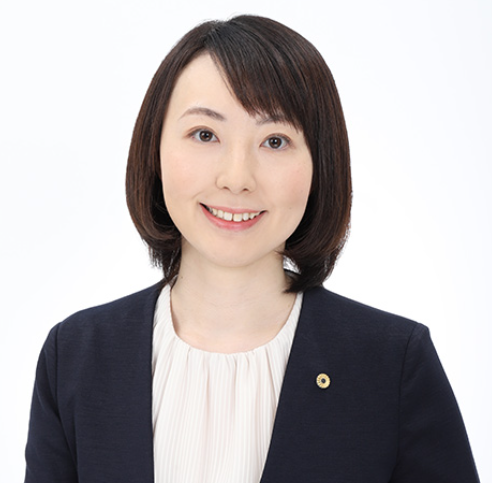

社会保険労務士であっても「全員が助成金相談に強い」わけではありません。
本セミナーでは、士業事務所自身が活用できる採用・定着の助成金から、
知っておくことで顧問先の信頼と提案力を高める活用ノウハウまで、
現役の社会保険労務士が分かりやすく直接解説します。
「人手不足で事務所の採用が進まない」「スタッフの定着に悩んでいる」「顧問先から助成金の相談を受けるが、十分な提案ができていない」——士業の実務現場ではこのような課題が非常に増えています。
雇用関係の助成金は、労働環境の整備や人材育成を行う事業主を支援する制度です。本セミナーでは、厚生労働省の主要な助成金制度を中心に、士業事務所自体が使える制度と、顧問先の経営課題に応じた具体的な提案手法を体系的に学びます。
| 分類・目的 | 主な助成金名称 | 主な活用場面・支援内容 |
|---|---|---|
| 雇用環境・正社員化 | キャリアアップ助成金 | 有期雇用者の正社員化（80万円）や社会保険適用に伴う収入増加の取組支援。 |
| 定着・制度整備 | 人材確保等支援助成金 | 評価制度・メンター制度等の導入により離職率低下を達成した場合に支給。 |
| 両立支援・育休 | 両立支援等助成金 | 育休取得・職場復帰支援や男性従業員の連続育休取得の促進。 |
| 生産性・賃上げ | 業務改善助成金 | 生産性向上のための設備投資と事業場内賃上げのセット支援。 |
| 人材育成・リスキリング | 人材開発支援助成金 | DX研修や専門知識習得など、従業員に対する外部研修費用・賃金の補助。 |
